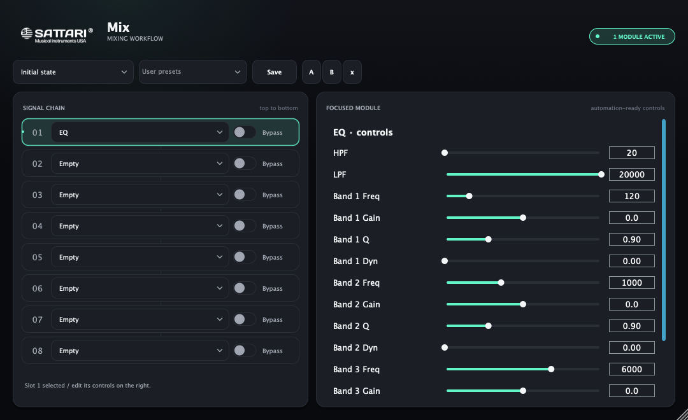
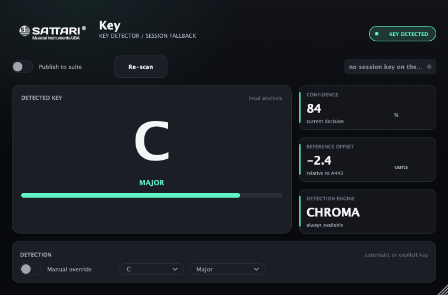
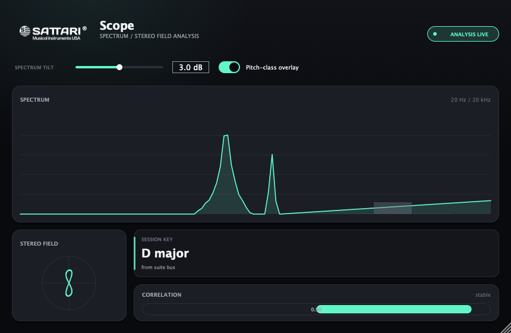
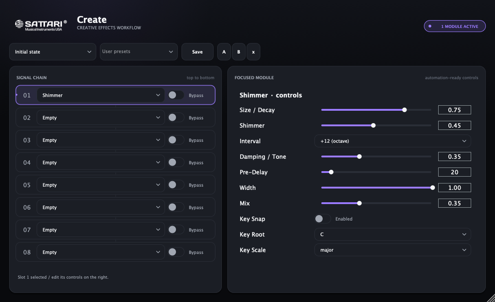
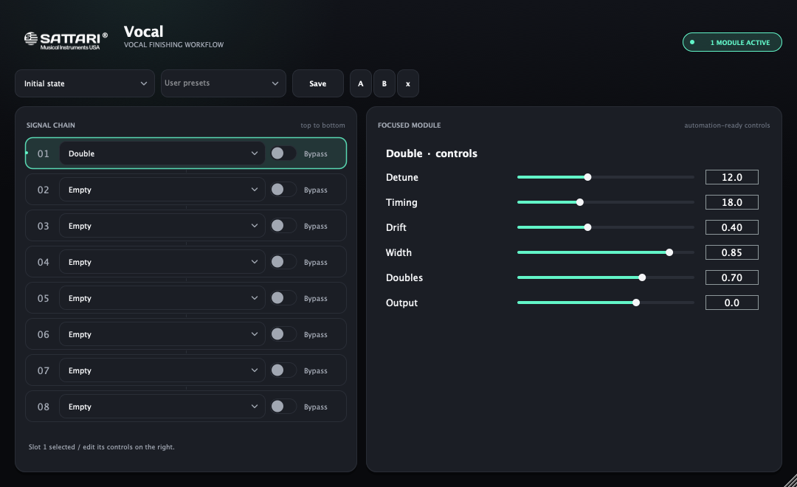
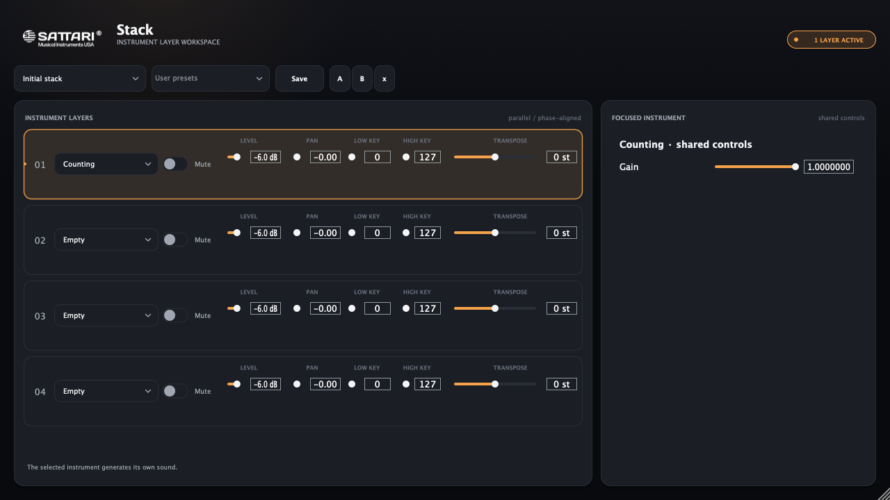
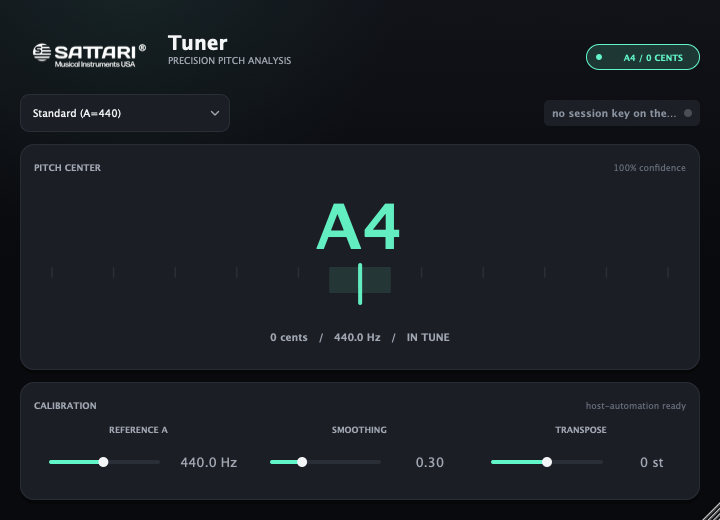
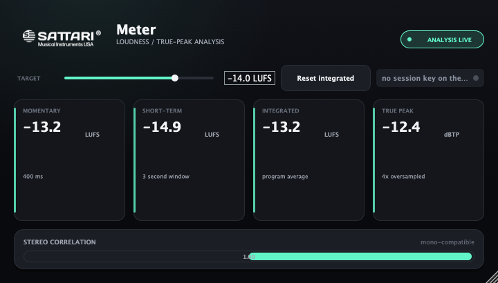
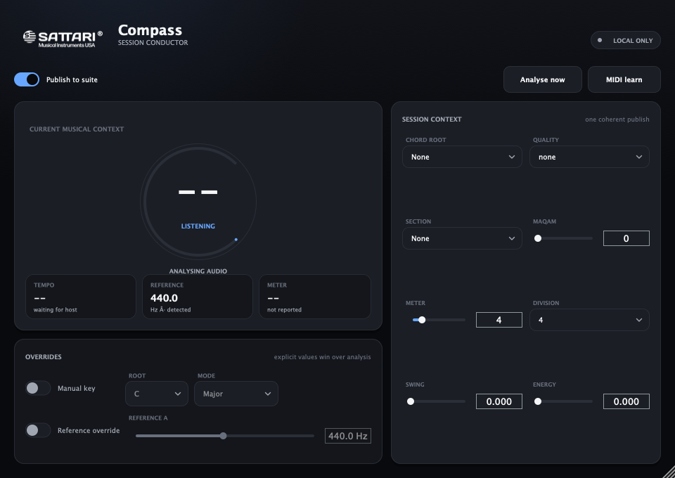

Internal development suite · macOS · not yet public or notarized
Real interfaces · current development build



4racks
28shared modules
48non-StemDeck products
1session key
The idea
One copy of every processor
Most suites ship the same compressor three times over. Ours exists once.
Every processor is a module — the DSP with the
plugin-ness removed. A module loads two ways: as its own plugin, or as a slot in a rack.
Both run the identical code, so an improvement lands in both at once and they cannot drift apart.
It also means your sessions survive. A module keeps the same parameter names whether it runs
standalone or inside a rack, so projects saved before the racks existed still open exactly as
you left them.
SHARED DSPOne processor module
One implementation. One parameter contract.
POWERS
StandaloneFull plugin window
Rack slotSame sound, in context
The racks
Build the chain, don't buy it
Four hosts. Pick a module per slot, reorder it, bypass it. Nothing is welded shut.
Sattari Mix
8 slots · in series · AU + VST3
The channel strip you assemble yourself — dynamics, tone and metering, in
whatever order the source actually needs.
SATTARI MIX · CURRENT PRODUCT RENDER
Each of the eight slots holds one module and has its own bypass. Slot 1 feeds slot 2, and so
on down the chain — so you can gate before you compress, or compress before you gate, without
owning two different plugins.
An external sidechain runs through the whole rack. Route a kick into it and
the compressor ducks a bass to it; the gate opens a pad from it. There's no routing toggle to
forget — a routed key is the intent.
Vocal ChainDrum BusMaster BusClean UpDuck To KickBus (classic)Royal Chain (classic)
The last two were separate plugins. Their only real content was a fixed order of these same
processors — so they're presets now, and the order is yours to change.
Sattari Create
8 slots · in series · AU + VST3
Time, space and damage — reverb, delay, shimmer, tape, risers and vocoding
in one rack.

SATTARI CREATE · CURRENT PRODUCT RENDER
The same eight-slot chain as Mix, different cabinet. Reverbs and delays are tempo-locked:
they follow the host, and when the host reports no tempo they fall back to the suite's own
tempo bus rather than guessing 120.
Heat and Pulse appear here and in Mix. That isn't a duplicate — it's the
same module in two rosters. A module is DSP, not a product.
Ambient WashTape SlapEDM PumpRobot VocalVocoded PadTransition Build808 Sub LayerLo-Fi Grit
Sattari Vocal
8 slots · in series · AU + VST3
Finish the vocal — de-essing, doubling, formant shaping and full ensemble,
in one place.

SATTARI VOCAL · CURRENT PRODUCT RENDER
Glass Choir lives here as a module: one Character macro walks a single voice from
human through massive to destroyed. Standalone it gives you three
separate output stems — lead, choir and atmosphere. In a rack slot those fold together, which
is exactly what it already does when a host gives it a single output.
The instrument rack — and the one that works differently on purpose.

SATTARI STACK · CURRENT PRODUCT RENDER
Stack layers rather than chains. Chaining instruments is meaningless: each
would write over the last, so only the final slot would be audible. Instead all four layers
receive the same MIDI, render at the same time, and sum.
That only works musically if each layer has its own placement, so every one carries
level, pan, key range and transpose. The key range is what turns a stack into
a split — drums below C3, sampler above — or an octave layer, rather than
four instruments in unison.
Latency is the maximum of the active layers, not the sum, because they run
side by side. Any layer reporting less than the worst is delayed to match — otherwise a fast
instrument arrives early against a slow one and the stack flams on every transient.
SingleSplit at C3Octave LayerKit + SamplerFull Stack
Sattari Studio
Read the session in one glance
The analysis family uses the same dark, quiet visual system: exact values first,
live context second, and no decoration competing with the work.
Scope
Spectrum, stereo field, correlation and session key in one surface.
Tuner
Pitch, cents and confidence without visual noise.

Meter
Loudness, true peak and correlation built for decisions.

Key
The master musical authority for the entire session.
Compass
The conductor for key, tempo, chord, section, groove and energy.

Try it
Build a chain
Click modules to drop them into slots. Switch to Stack and watch the same
interaction become parallel instead of serial.
Modules
Signal chain
↓ all layers sum to one output
One conductor. Every product in context.
Put Sattari Compass on the master. It listens, lets you confirm the musical map, then
publishes key, tempo, chord, section, groove, energy and tuning as one coherent state.
Sattari Key remains the focused detector and fallback publisher. Auto Pitch, Harmony,
Maqam, VoxKey, Arp, Scaler, Shimmer and Sub Conjurer can follow without MIDI routing,
sends or duplicate setup.
Not everything belongs in a slot. These are deep enough that a rack row couldn't hold them —
so they didn't get one.
Auto Pitch
Realtime correction from invisible to hard-tuned, formant-preserving, with a polyphonic
mode that tunes whole chords and follows their overtones into key.
Sattari Key
The session's authority on key — a neural model plus an HPCP chromagram, publishing to
every other plugin.
Morph
Voice character and in-key echo. Deep enough to deserve its own window.
VoxSynth
Your voice as the instrument. It needs an audio input, which is exactly why it could never
be a MIDI layer in Stack.
Harmony & Maqam
Diatonic harmony voices and microtonal / maqam correction, both following the session key.
VoxKey, Arp & Scaler
Voice-to-MIDI, a key-aware arpeggiator, and key-following chords — MIDI tools rather than
audio processors.
Everything
All plugins
Open any one for what it does, how it works, and its full feature list.
Details
Will my old sessions still open?
Yes. Every module keeps the parameter names it had as a standalone plugin, so a project saved
before the racks existed loads exactly as you left it. The standalone plugins are all still
there too — the racks are an addition, not a replacement.
What happened to Bus, Royal Chain and Vocal Master?
They were fixed orders of processors the suite already had. Rather than keep three plugins
whose only content was a chain someone else chose, they ship as presets — "Bus (classic)",
"Royal Chain (classic)" and "Vocal Master (classic)". Same starting point, and now you can
reorder it.
Why is Stack a separate plugin from the other racks?
Because an instrument and an effect are different plugin types to the host, and because
instruments have to be layered rather than chained. Both are decisions that can't be reversed
later without breaking saved sessions, so Stack was built as its own host from the start.
Do I need Sattari Key for the rest to work?
No. Every key-aware plugin has a manual key control and works fine on its own. Sattari Key
just means you set it once, in one place, and everything follows.
What formats and machines?
The intended targets are macOS Audio Unit, VST3 and Standalone, built Universal for Apple
silicon and Intel. Individual products become downloadable only after their own compile,
contract, bundle, signing, notarization and host-validation evidence is recorded.
Get it
Internal alpha program
Compass, Arp and Sub Conjurer are the first curated alpha set. Public Hub downloads stay closed
until signed artifacts, notarization and integrity-pinned updates are live.